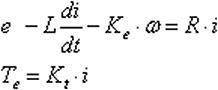
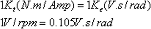

PMDC 电动机让您可以定义电动机的电气参数。您可以定义标称电压、电感、电阻以及初始电流。
这些值将使用下面显示的等式定义电动机的速度曲线：


其中：
e = 输入电压(标称电压乘以信号图中的信号值)
L = 电感
Ke = 电压常数(反电动势常数)
ω = 转子旋转速度
R = 电阻
i = 初始电流
Kt = 扭矩常数
要获取更多关于各个参数的信息，参加 NX 运动仿真在线帮助。在大多数情况下，您都将构建一个真实生产的电动机。
|
注释 |
可以使用 PLM XML 文件格式构建一个电动机库，以在 NX 运动仿真中使用。可以使用文件→导入→机构→从文件导入命令来把 PLM XML 文件导入到运动仿真中。 |